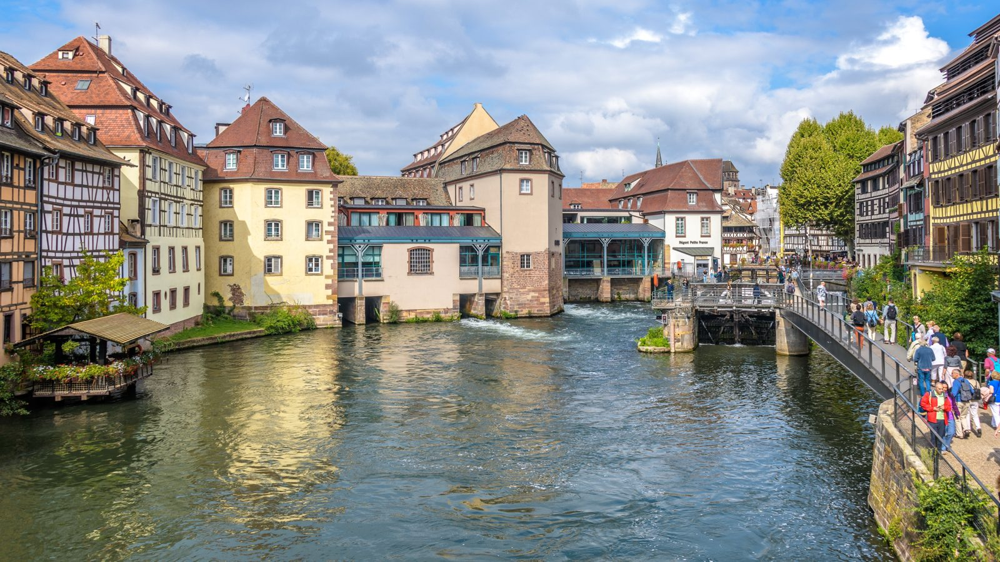

La vidéo souvenir
Les temps forts
Jeudi 8Retrouvailles amicales à l'Art Café.
Vendredi 9Cour européenne des droits de l'homme, Conseil de l'Europe et Parlement européen ; visite musicale de la cathédrale ; la vieille ville en Batorama ; choucroute chez Kammerzell.
Samedi 10Kaysersberg, dégustation chez Rolly-Gassmann, le Haut-Kœnigsbourg, puis soirée de gala à l'Ancienne Douane.
Dimanche 11Messe à la cathédrale autour de Luc Ravel, visites du vieux Strasbourg et cocktail de clôture dans sa résidence.
Anniversaire à Strasbourg
45e anniversaire de la promotion X77, du jeudi 8 au dimanche 11 septembre 2022
Quatre jours entre Europe et Alsace

141 participants ont fêté à Strasbourg le 45e anniversaire de la promotion, accueillis par notre camarade Luc Ravel, alors archevêque de Strasbourg. Quatre jours de rencontres au cœur des institutions européennes, de découvertes en Alsace et d'échanges amicaux, autour de l'ouvrage collectif « Le Progrès ».
Photos : Tristan de Viaris et Patrick Tejedor. Vidéo : Stéphanie Moser.